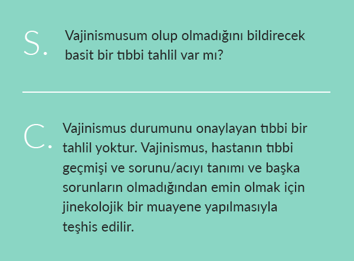
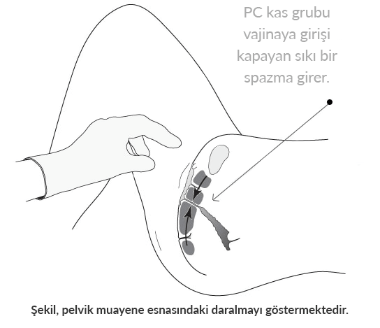

Hızlı Teşhis
Aşağıdakilerin herhangi biri vajinismusun varlığına kuvvetli bir işaret oluşturur (daha ayrıntılı bilgi için Vajinismus Belirtileri):
Giriş Sorunları
Zor giriş ya da cinsel birleşmenin imkânsızlığı/evlilikleri seksle tamamlanmamış çiftler. Kadınların cinsel birleşmede girişi sağlayamamaları ve seksle tamamlanmayan evlilikler tipik olarak vajinismustan ötürüdür. Girişte sıkışıklık ve acı, vajinismusun yaygın belirtileridir.
Tıbbi Sorunlar
Pelvik bir sorun, tıbbi sorunlar ya da ameliyattan sonra devam eden cinsel acı. Pelvik tıbbi ya da acı sorunu nun çözülmesinden sonra devam eden cinsel acı ya da sıkışıklık yaşamak tipik olarak vajinismustan kaynaklanır (ayrıca bakınız disparöni).
Nedeni Anlaşılmayan Fiziksel Acı
Nedeni anlaşılmayan sürekli cinsel acı ve sıkışıklık. Vajinismus genelde sadece seks çabaları sırasında gerçekleşir. Doktorlar ilk önce cinsel zorlukların nedeni olan bir sorun bulamayabilirler.
Seksten Uzak Durmak
Acı ve/veya başarısızlıktan ötürü seksten uzak durmak. Bir kadın, seksin ona kendini iyi hissettirmediği ya da çok acı veren bir hâl aldığından ötürü eşiyle cinsel ilişkiye girmekten kaçındığını bildirdiğinde vajinismus olasılığının üzerinde kuvvetle durulmalıdır
Doğumdan Sonra
Doğumdan sonra devam eden cinsel acı. Doğumdan sonra cinsel acı ya da sıkışıklık durumunun devam etmesi (her şey iyileştikten sonra) tipik olarak ikincil vajinismustan ötürüdür.
Vajinismusun Tıbbi Teşhisi
Kadınlar genelde belirtilerine bakarak vajinismusları olup olmadığından şüphelenirler ama tıbbi onay almak zor olabilir. Vajinismus konusunda resmî bir teşhisin onaylanması planlama ve sabır gerektirebilir. Vajinismusun teşhis edilmesi için kesin bir tıbbi teşhis olmadığından, tıbbi bir teşhisin konulabilmesinden önce birkaç doktor ya da uzmana gidilmesi gerekebilir.
Doktorlar ilk önce belirli bir tıbbi sorun bulamadıklarında (ki vajinismus rahatsızlığı çekenlerin sıklıkla yaşadıkları bir durumdur) ilk yapılan tıbbi muayenelerin sonucu genellikle teşhis konulamaması ya da yanlış teşhis konulması olur.
Kadınların kendilerini kuvvetli bir şekilde savunmaları ve bilgili bir profesyonelden, başka bir sorun olmadığından emin olarak vajinismus teşhisini doğru olarak koyması konusunda ısrar etmeleri gerekebilir.
Birçok doktor vajinismus konusunda fazla bilgili değildir, bu yüzden sürecin bir kısmını sadece sorun konusunda bilgili bir doktor bulmak oluşturur. Vajinismusun başarılı bir tıbbi teşhisi, tipik olarak hastanın tıbbi geçmişi, sorunu tanımlaması, jinekolojik muayene ve başka sorunların olmadığından emin olma süreciyle yapılabilir. Doktorlarla cinsel sorunlar hakkında konuşmak zor olabilir. Utanma, sıkılma ve endişe vardır ve bunlar da iletişim kurmayı ve doğru tedavinin sağlanmasını zorlaştırır.
Tıbbi bir teşhis, durumu tanımlamayla ilgili bütün kuşku ve endişeleri ortadan kaldırmakta yararlıdır ve kadınların tedavi çözümlerine doğru ilerlemelerinde onlara daha çok güven sağlar. Vajinismus gibi cinsel acı rahatsızlıklarına çoğu zaman yanlış teşhis konulur ya da ele alınmadan bırakılır. Kadınların, endişelerine gerekli ilgili gösterilip güvenilir bir tıbbi teşhise erişilene dek sebat etme konusunda çok cesur olmaları gerekebilir. Bazı durumlarda, sağlam bir tıbbi teşhis konulması her zaman mümkün değildir. Örneğin daha az sağlık hizmeti verilen bölgelerde durum böyledir.
Misyon umuz, bu durumda olan mümkün olduğu kadar çok sayıda kadına yardım etmektir.
Bu web sitesi vajinismus hakkında önemli bilgileri ayrıntılarıyla vermektedir. Durumlarına böyle bir teşhis konulacağını düşünen herkesi durumları hakkında mümkün olduğunca çok şey öğrenmeleri ve belki de kendi durumlarına biraz ışık tutmak için belirtiler, öyküler, nedenler, tedavi, kullanıcı/tıbbi geribildirim ve Sık Sorulan Sorular gibi çeşitli site konularını iyice okumaya davet ediyoruz.
Günümüzde kadınların vajinismus ve tedavisi hakkında bilgi almaları için birçok harika kaynak bulunuyor. Sitemizde sunula kendine yardım tedavi kılavuzu başarılı vajinismus yardımı konusunda belirtiler, nedenler ve tedavi protokolleri hakkında epey ayrıntılı bilgi verir.

Vajinismus tıbbi web siteleri, kadınların değişik pelvik acı sorunları konusunda yararlı bilgiler bulup, farklı durumları ayırt edip anlamalarına yardımcı olabilir. Değişik bilim dallarından pelvik taban sorunlarının teşhis ve tedavisinde yardımcı olacak birçok uzman vardır. Vajinismus teşhisi konusundaki kaynaklara şunlar da dâhil olabilir:
- Jinekologlar – Jinekolog, kadınların pelvik sağlık konularını teşhis ve tedavi konusunda uzmanlık eğitimi almış bir tıp doktorudur. Bütün jinekologlar vajinismus teşhis ve tedavisinde deneyimli değildir ancak çok bilgilidirler ve diğer olasılıkları elemeye yardımcı olabilecek, sağlık sorunlarını aydınlığa kavuşturacak olmanın yanı sıra iyileşme yolunuzda sizin için harika bir yardımcı olabilirler.
- Fizik Tedavi Uzmanları – Gitgide artan sayıda fizik tedavi uzmanı vajinismus gibi pelvik taban ve cinsel acı sorunları konularında uzmanlık yapmaktadır. Birçok fizik tedavi uzmanı, kadınların evlerinde, kendi hızlarında ve daha düşük bir giderle çalışabilmesine imkân veren ev programları oluşturmakta hastalarla birlikte çalışır. Amerikan Fizik Tedavisi Derneği Journal of Women’s Health Physical Therapy kısa bir süre önce vajinismusu olan bütün kadınların bizim kaynaklarımızı kullanmalarına yönelik bir tavsiye yayınladı. Birçok tedavi uzmanı, hastalarına başarılı ev tedavisinde yol göstermek için kaynaklarımızı kullanıyor.
- Seks Terapistleri, Psikologlar ve Danışmanlar – Vajinismus konusunda çeşitli derecelerde deneyim sahibi olan daha başka birçok uzman da bulunmaktadır.
Vajinismus Teşhisinin bir Parçası Olarak Pelvik Muayene
Vajinismus teşhisinin en önemli yönlerinden biri, belirtilere sebep olabilecek diğer olas fiziksel veya tıbbi durumların ayrıntılı şekilde elenmesi ve vajinismusu neredeyse kesin sebep olarak öne çıkarmasıdır.
Eleme süreci, vajinismus teşhisinin önemli bir parçasıdır. Teşhis süreci tıbbi ve cinsel geçmişe dair bilgi verilmesini ve pelvik veya jinekolojik muayene yapılmasını içerir.
Doktor, doğru bir vajinismus teşhisi koyabilmek için acının yerini ve gerçekleşme şeklini öğrenmek isteyebilir ve vajinismusun yanında başka sorunların elenmesini sağlayacak başka testler de rica edebilir.
Bazı kadınlar, kendilerini ifade etme ve muayene olma konusunda kadın sağlık uzmanlarıyla çalışırlarsa daha rahat hissetmektedirler. Bunun önemli bir husus olması hâlinde, kadınların bir kadın uzmana yönlendirilmelerini tavsiye ediyoruz. Etkin ve sistemli bir yaklaşım benimsemek, kişinin daha iyi bakım ve tedavi sonuçları almasını sağlar.
Vajinismus Teşhisine Özgü Zorluklar
Yanma, sıkılık ve zor giriş gibi belirtiler pelvik muayene sırasında hiç fark edilmeyebilir. Bazı kadınlar için bu belirtiler sadece cinsel birleşme çabaları sırasında gerçekleşir. Bu nedenle, teşhiste bulunurken kadının üstü kapalı bir şekilde “Cinsel birleşme sırasında zorluk çekiyorum” gibi bir söz söylemesine bile ciddi bir önem verilmelidir.
Bazen, yoğun çalışan sağlık uzmanları vajinismus belirtilerini anlamaz ve sadece “daha çok kayganlaştırıcı kullanın”, “daha çok gevşemeye çalışın” ya da “biraz şarap için” gibi standart (ama yardımı dokunmayan) öğütler verirler. Bunun nedeni vajinismus konusunda fazla bilgileri olmaması ya da konu hakkında güncelliği geçmiş yayınlardan edindikleri bilgilerle hareket etmeleridir. Vajinismusu olan bazı kadınlar PC kas sıkılığından ötürü, jinekolojik muayeneleri aşırı acı verici bulurlar ve muayeneye tahammül edemezler. Eğer bir kadın bir muayeneyi tamamlamakta zorluk çekeceğini düşünüyorsa, bunu doktoruna bildirmelidir.
Vajinismüsü iyileştirecek bir ameliyat yoktur. Vajinal açıklığı 'genişletmek' için ameliyat önerildiyse ikinci bir görüş olmak çok önemlidir çünkü bü genelde giriş sorununu çözümlemek yerine sorüna daha fazla komplikasyon getirir.
Vücudun konumlandırılması, kullanılan spekülumun boyu ve hemşire desteği gibi daha olumlu bir deneyime katkıda olması sağlanabilecek bazı düzenlemeler yapılabilir. Vajinismus durumu konusunda bilgili olan bir doktor, rahat ve duyarlı bir ortam sağlamaya daha yatkın olacaktır.
Pelvik muayene sırasında sürekli vajinal sıkılık olduğunda bu durum doktora fazla küçük vajina ya da kızlık zarı anormalliği sorunu gibi görünebilir.
Hastanın eşiyle girişin gerçekleştiği şekilde seks yapamadığı ya da seksin çok acı verdiği konusundaki şiddetli şikâyetleriyle birleştiğinde yanlış olarak vajina girişinin genişletilerek girişe izin vermesi için düzeltici ameliyat gerektiği kanısına varabilir.
Ender istisnalar olabileceği hâlde, vajinismusu olan kadınların cinsel organları tipik olarak normaldir. Vajinanın kapanması sadece pelvik taban kaslarının sıkı bir istemsiz spazmından kaynaklanmaktadır. Ne yazık ki bazı doktorlar kadına çok büyük rahatsızlık ve acı vererek pelvik muayeneyi bitene kadar devam ettirirler. Bu sarsıcı deneyim bile tek başına vajinismus durumuna katkıda bulunabilir.
İlgili bilgiye sahip olmayan sağlık uzmanlarının yanlış teşhis koyması pek çok tehlikeye yol açabilir. Doğru teşhi konulmayan kadınlara gereksiz, invazif ve potansiyel olarak zararlı ameliyatlar ve tedaviler önerilmektedir. Bu karışıklıklardan ötürü yanlış teşhis, invazif veya yararsız ameliyatlar söz konusu olabilir.
Vajinismusu iyileştirecek bir ameliyat yoktur. Vajinal açıklığı 'genişletmek' için ameliyat önerildiyse ikinci bir görüş olmak çok önemlidir çünkü bu genelde giriş sorununu çözümlemek yerine soruna daha fazla komplikasyon getirir.
Vajinal açıklığı ‘genişletmek’ için ameliyat önerildiyse ikinci bir görüş olmak çok önemlidir çünkü bu genelde giriş sorununu çözümlemek yerine soruna daha fazla komplikasyon getirir. Durumlarına doğru teşhis konulmayan vajinismusu olan kadınlara gereksiz, invazif ve zarar verme olasılığı olan ameliyatlar ve ilaçlar tavsiye edilmiştir.
Vajinismus invazif prosedürler gerektirmeyen tedavi edilebilir bir durumdur (bakınız Vajinismus Tedavisi). Durumlarına bir teşhis konulmasını isteyen birçok kadına, onların durumlarında fiziksel olarak hiçbir sorun bulamayan ve kendilerinin yapabilecekleri başka bir şey olmadığını düşünen doktorlar tarafından çoğu zaman bir teşhis konulmaz. Sırf durumun bilincinde olmadıklarından vajinismus teşhisini göz önünde bulundurmazlar.
Örnek Senaryo: Kendi Kendine Oluşturulan Bir Cinsel Acı Tarihçesi
Aşağıdaki örnek senaryo, kadınların cinsel acılarına güvenilir bir teşhis alabilmelerine yardım etmek için doktor muayenelerine hazırlanmaları üzere yararlı ipuçları içerir. Metin, vajinismus durumuyla bağlantılı olan örnekler sağlar, ancak herhangi bir cinsel ya da pelvik acı sorununun ayrıntılarını bildirmek için kolayca değiştirilebilir:
1. Sorunu Bildirin
“Seks sırasında sorunlar yaşıyorum ve bana yardım edebileceğinizi ümit ediyorum.”
2. Acıyı Tanımlayın (Kesin Konuşun)
Şöyle Olduğunda Oluyor… “kocam penisini vajinama sokmaya çalıştığında” ya da “içime girdikten sonra hareket etmeye başladığında yanma ve sıkışma hissediyorum,” vb.
Acı Surada… “vajinamın girişinde. Vajinam bir duvar gibi; eşim içime giremiyor” ya da “eşim içime girdikten sonra penisin girişten hemen sonra bulunduğu yerde yanma hissediyorum,” vb.
Acı şu kadar devam ediyor… “Eşim cinsel birleşme çabasına devam ettikçe, özellikle de penisini zorla sokmaya çalışırsak. Buna son verdiğinde acı yok oluyor.”
Bu ne zamandır devam ediyor… “İki yıl önceki balayımızdan beri ve seks yapmaya çalıştığımız her seferinde devam etti” (birincil vajinismus) ya da “sekiz ay önce rahmimin alınmasından beri” (ikincil vajinismus), vb.
Nasıl hissettiriyor… “yanma”, “batma”, “eşim bir duvara vuruyormuş gibi oluyor”, “giriş sırasında ya da hemen sonra daralma”, vb.
Acıyı azaltmak ya da ortadan kaldırmak için şunları yaptım… “kayganlaştırıcı kullandım, seks pozisyonlarımızı değiştirdik, daha çok gevşemeye çalıştım.”
Şunları Yapabiliyorum/Yapamıyorum… “tampon koymak ya da jinekolojik bir muayeneyi tamamlamak.”
3. Geçmişte Herhangi bir Sorun Olduysa Bildirin
Cinsel yolla bulaşan hastalıklar, maya enfeksiyonları, idrar yolları sorunları geçirdiniz mi ya da giriş dışı başka bir pelvik acı hissettiniz mi?
4. Geçmişte Cinsel bir Taciz Yaşadıysanız Bildirin
5. Sorunun ne Olduğunu Düşündüğünüzü Bildirin
“Sanırım sorun vajinismus olabilir. Belirtilerim okuduğum makalede bildirilen ana noktalara çok benziyor. Ancak seks sırasında acıya neden olan başka şeylerin de olduğunu okudum ve bunların elenmesini istiyorum.”
Not: Daha önce acı duymadan cinsel ilişkide bulunabildiyseniz bunu doktorunuza bildirin.